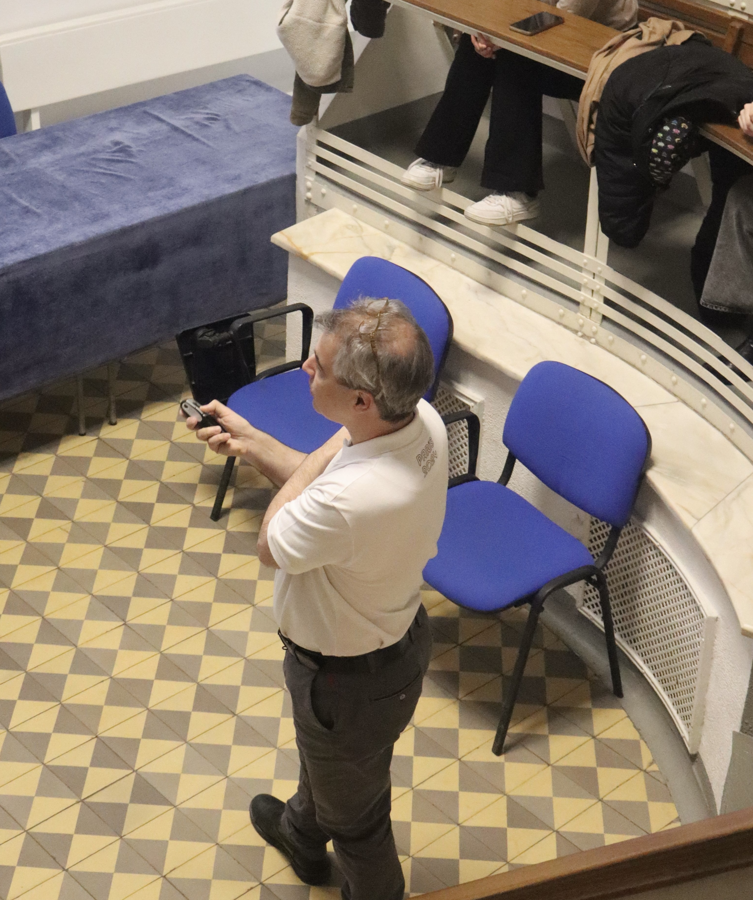
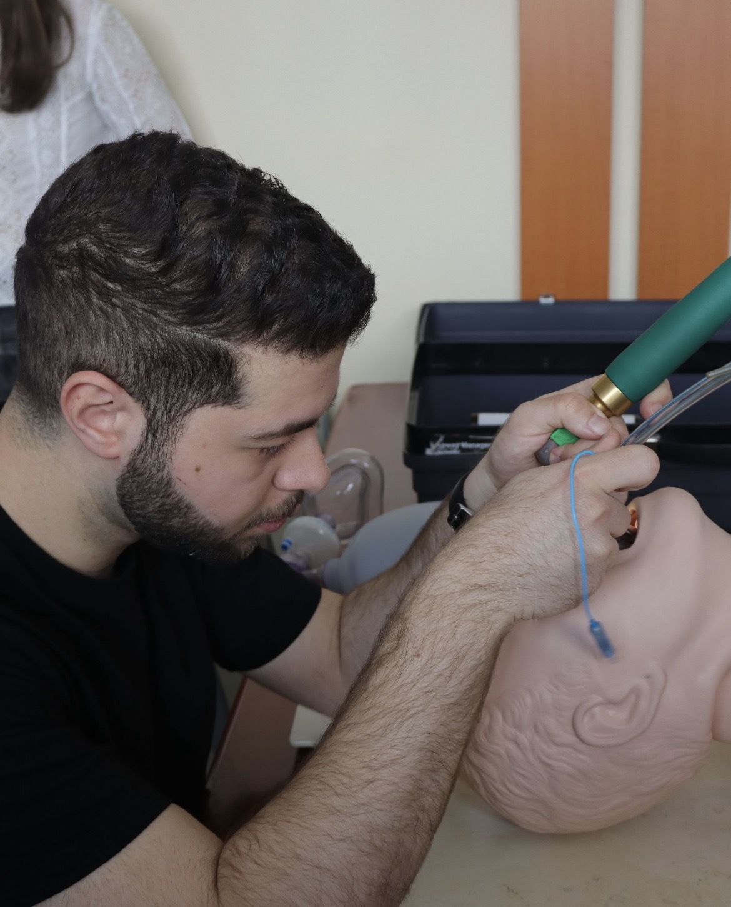
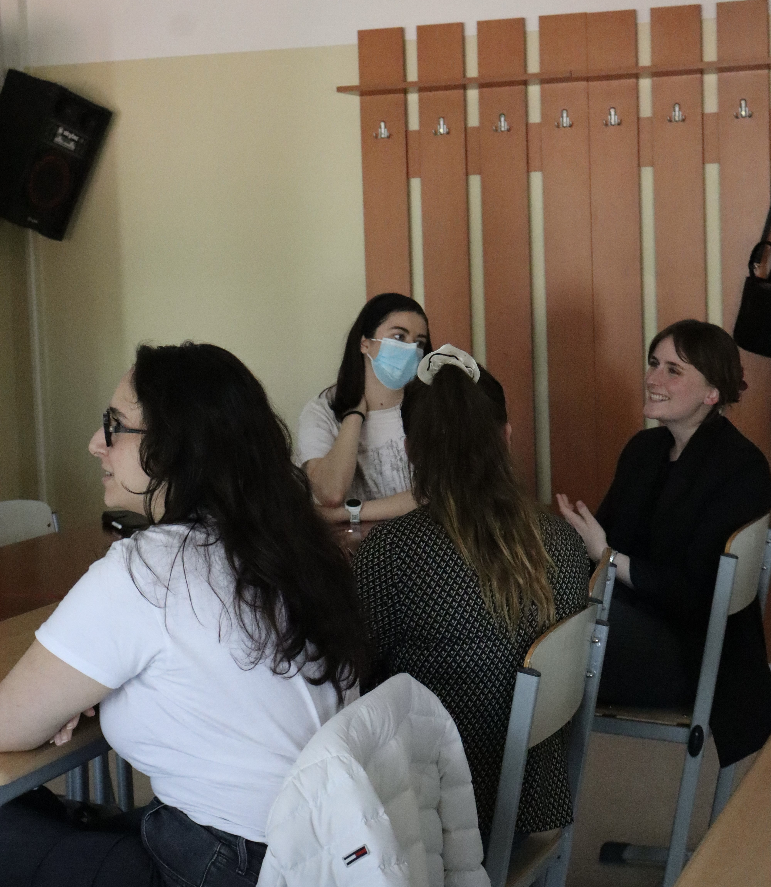
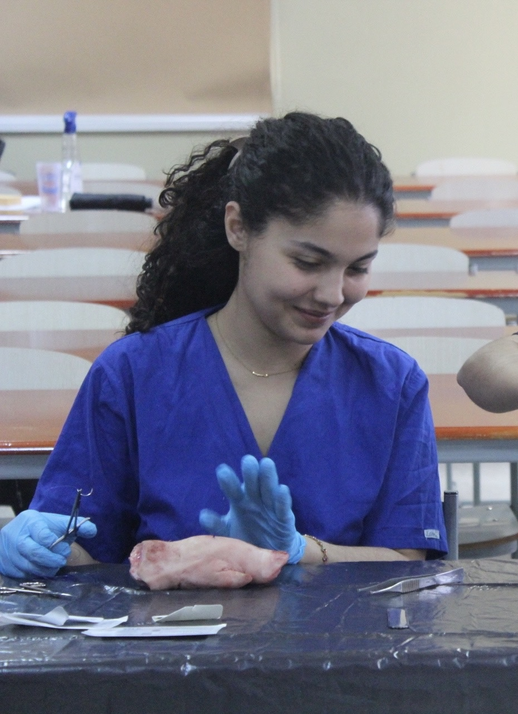
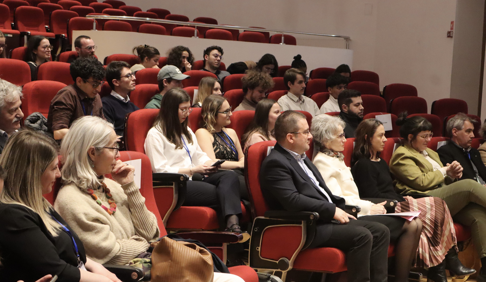

Retrouvez les conférences, workshops, tables rondes et événements qui ont rythmé les différentes éditions de Ti'Doc.
Une première édition riche en rencontres, en apprentissages et en moments de partage autour de la médecine et de la santé.
Dr. Vannier
Dr. Mesaros
Dr. Fried
Dr. Cismaru
Dr. Samoila
Dr. Ratignier-Carbonneil
Dr. Bouquet
Dr. Lemoine
Dr. Frentiu et Dr. Briciu
Dr. Cozma-Petrut
Dr. Reny
Dr. Livint-Popa
Des ateliers en petits groupes permettant aux participants de découvrir et de pratiquer différents gestes et approches médicales.
Dr. Bouquet
Dr. Lemoine
Dr. Challi
Asociația Autism Transilvania
CEFA
Cercle de sémiologie médicale
avec CMC Event
avec CMC Event





Merci aux organisateurs, c'était super et vous avez fait un beau travail <3.Naelle El Fassal
Parfait.Léa Bourgeois
Rien de plus, c'était très bien pour une première.Elise Mesple
La deuxième édition arrive ici. Nous allons construire cette partie ensemble avec son programme, ses photos, ses intervenants et ses temps forts.